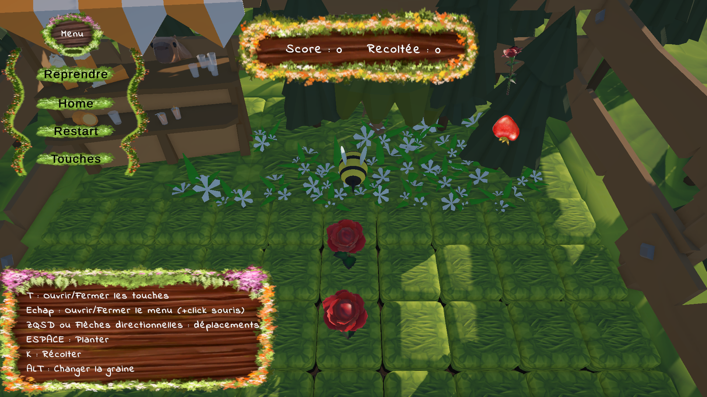

Gameplay
Déroulement d’une partie
- Se placer au-dessus d’une parcelle d’herbe ou de terre.
- Planter une graine et attendre sa maturité.
- Récolter la fleur avant son explosion.
- Gagner des points et débloquer de nouvelles graines.
Projet universitaire 2026 · Unity · C#
Un jeu de jardinage dans lequel une petite abeille plante des graines, récolte les fleurs à temps et débloque de nouvelles variétés.

Le contexte
Le joueur incarne une petite abeille installée dans un jardin au milieu d’une forêt. Son objectif est de planter des graines, d’attendre que les fleurs arrivent à maturité et de les récolter avant qu’elles n’explosent.
Un capybara accompagne le joueur depuis son stand. Chaque récolte rapporte des points et permet de débloquer progressivement toutes les sortes de fleurs.
Éléments visuels
Gameplay
Commandes
Ma contribution
Environnement de production

Moteur utilisé pour créer le jardin, les parcelles et les mécaniques du jeu.
Langage utilisé pour programmer les interactions, les fleurs, le score et les graines.

Environnement utilisé pour développer et déboguer les scripts.
À retenir pour la présentation
Bee's Garden repose sur une boucle de jeu claire : planter, surveiller, récolter et améliorer ses possibilités. La contrainte d’explosion apporte une tension simple qui pousse le joueur à organiser ses déplacements et ses priorités.